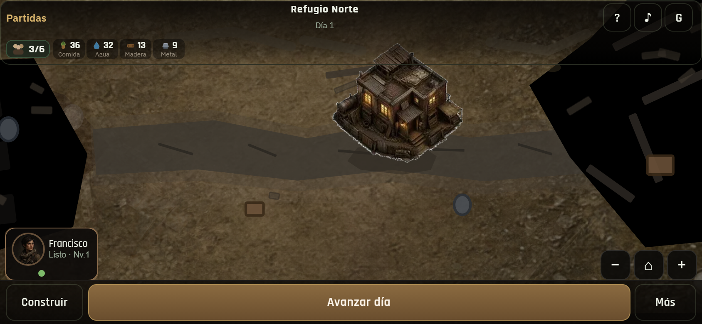
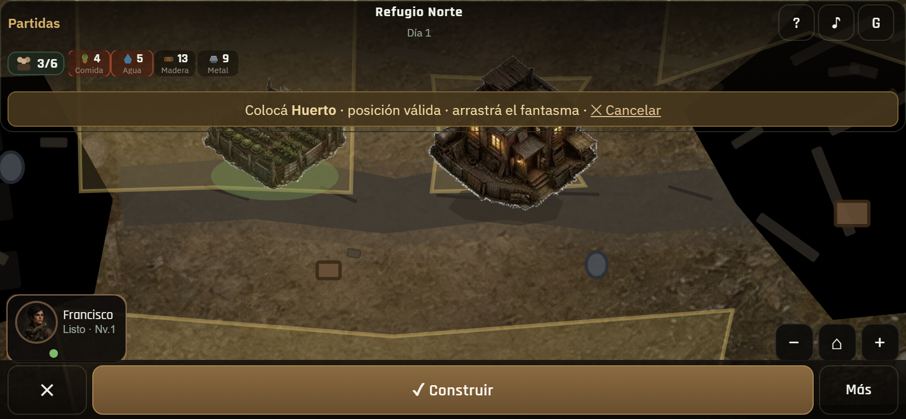
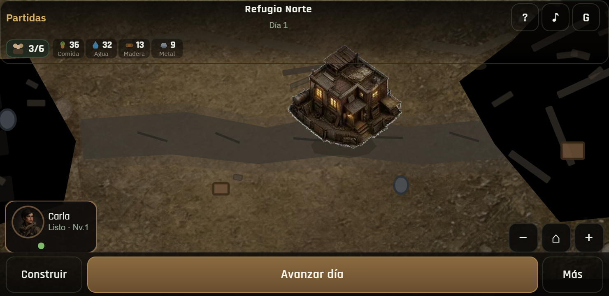
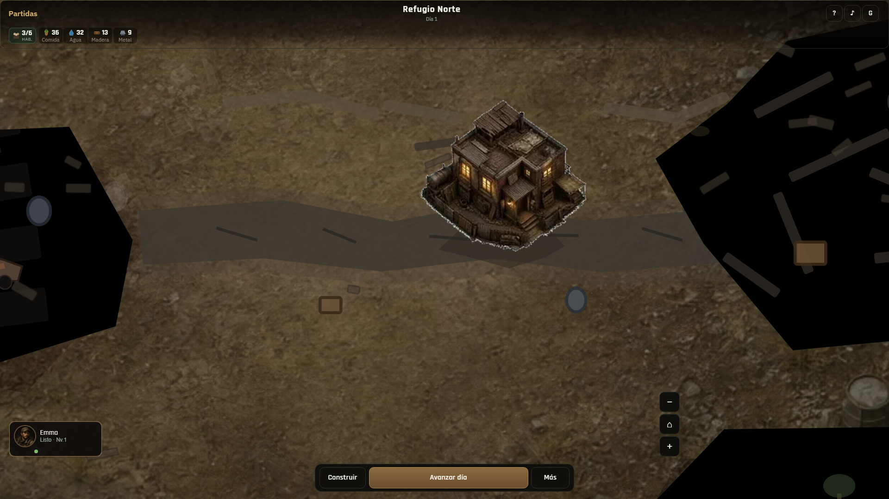
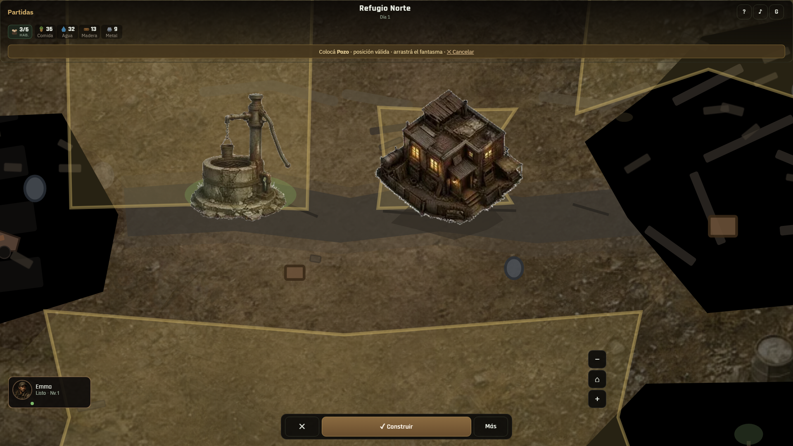

01 · HUD 844×390Comida · Agua · Madera con nombre
02 · HUD bajoCrit/low legible

03 · HUD + construirMadera visible al construir
04 · Mundo + HUDLandscape completo

05 · 740×360Nombres visibles

06 · Desktop HUDComida/Agua/Madera

07 · Desktop construirRecursos + mundo